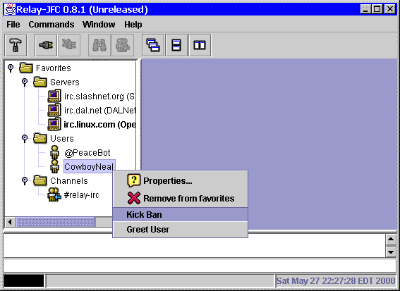

One | Two | Three | Home
This screenshot shows the new "Kick Ban" and "Greet User" menu options that were added by the dialogs in the previous screenshot.

Copyright (c) 2000 David M. Johnson $Revision: 1.1 $